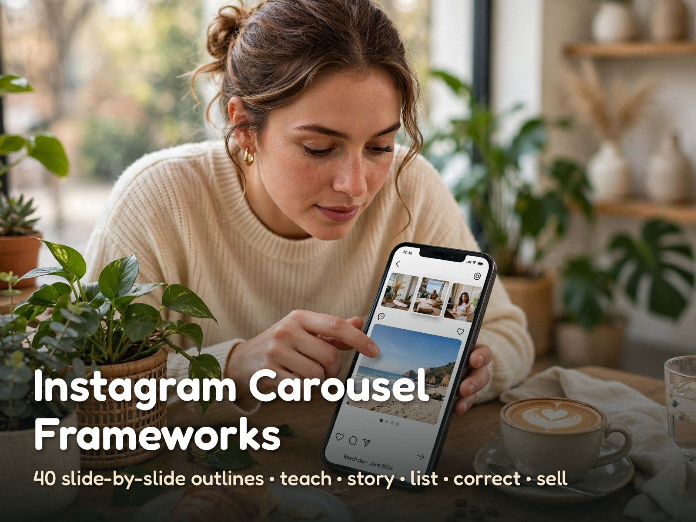

$7 USD — instant download
Instagram Carousel Frameworks — 40 Slide-by-Slide Outlines for Teach, Story, List, Correct & Sell Posts
Get it on GumroadMost carousel stalls are not design problems — they are blank-page problems: you open the app, you have a topic, and you have no idea what goes on slide 3. This 25-page PDF gives you 40 frameworks that solve that. Every framework lists each slide's job in order and ends with a worked example topic, so you always know what the next slide is supposed to do.
Teach frameworks (10) include the Full Tutorial, Mistake Autopsy, Beginner's First Week, Checklist Post, Tool Tour, Numbers Explained, Comparison Table, FAQ Carousel and Glossary Drop. Story frameworks (8) cover the Flop Retold, Honest Before/After, Customer Story, Origin Story and Letter to Past Me. List frameworks (8) give you Starter Kit Lists, Do/Don't Pairs, Resource Stacks and Progression Ladders. Correct frameworks (7) handle Myth vs Fact, Stop/Start and Expectation vs Reality, and Sell frameworks (7) include the Objection Carousel, Price Breakdown and Problem → Failed Fixes → Yours.
A framework is only useful if it survives production, so the pack adds the anatomy of a carousel that gets saved, a 15-minute production workflow, and a bank of 12 first-slide hook lines. Three frameworks are worked out completely, slide by slide — a baker's mistake autopsy, a wallet seller's objection carousel and a plant seller's do/don't pairs — so you can watch an outline become a real post before you build your own. Pick a framework, fill it with your specifics, and the structure carries the post.
Frameworks organise what you know — they do not replace knowing something, and they cannot promise reach or followers. What they remove is the blank page between your knowledge and a finished, saveable carousel. The pack is for creators who post educational, story or product carousels and keep stalling on structure; if you want ready-made captions to copy word for word, these outlines are not that — they are better, because they still work on your hundredth post.
This is a digital download — no physical item will be shipped. For personal use; please do not redistribute or resell the file.